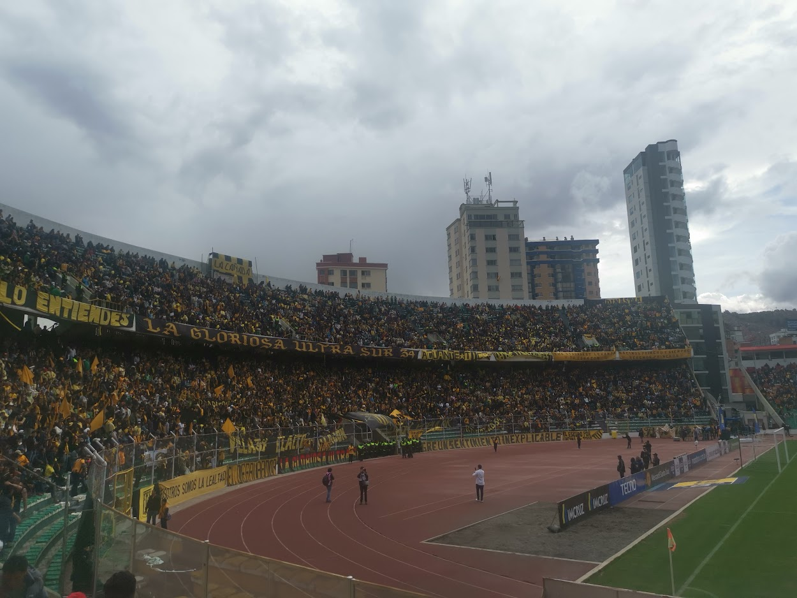

Momentos de ocio
Momentos familiares que motivaron mi camino

Deporte:El futbol
Las narrativas de una futbolera empedernida

La IA y como esta revolucionando las investigaciones
La investigacion que me llevo a replantear mi vida